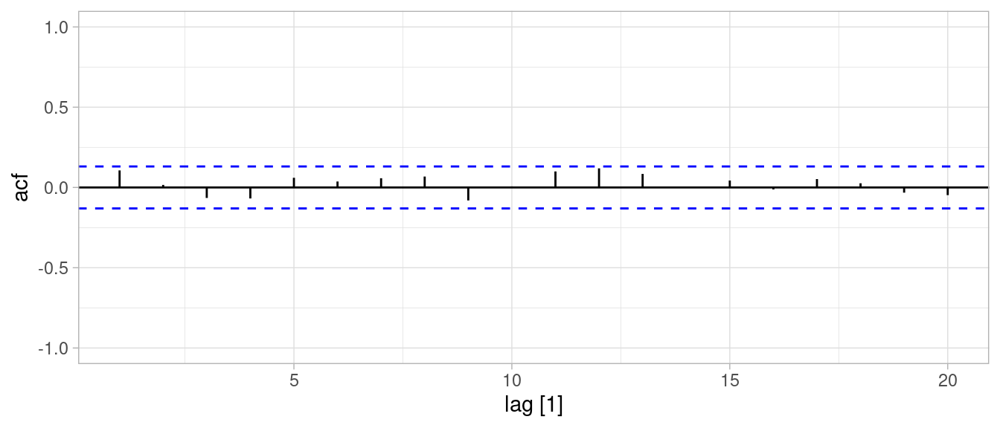
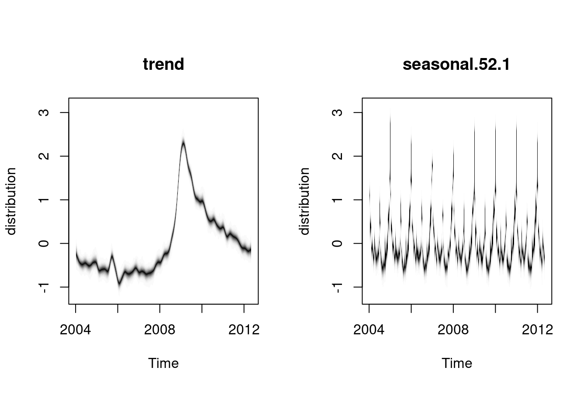
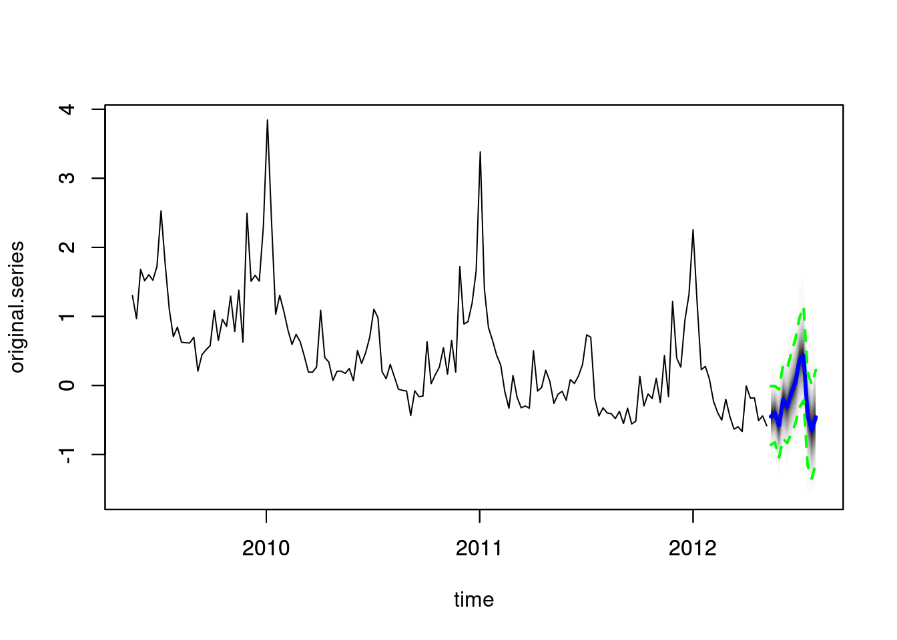
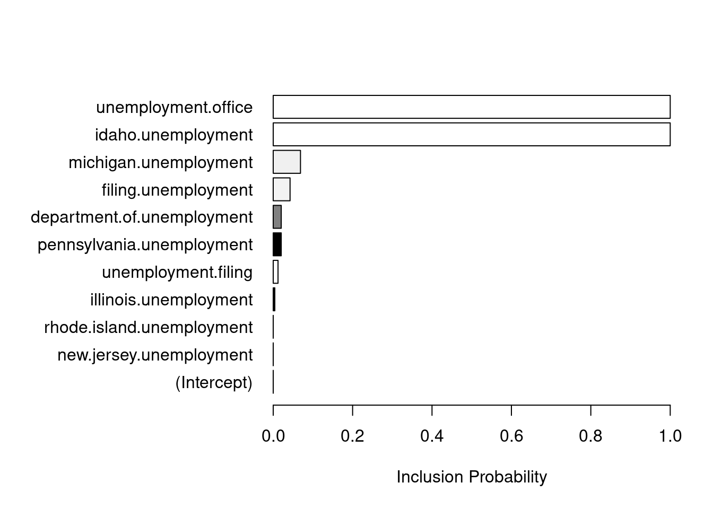

Código
library(tidyverse)
library(kableExtra)
library(DiagrammeR)
locale <- Sys.setlocale("LC_TIME", "es_ES.UTF-8")
library(lubridate)
library(fpp3)
ggplot2::theme_set(ggplot2::theme_light())library(tidyverse)
library(kableExtra)
library(DiagrammeR)
locale <- Sys.setlocale("LC_TIME", "es_ES.UTF-8")
library(lubridate)
library(fpp3)
ggplot2::theme_set(ggplot2::theme_light())Consideramos un ejemplo de Hyndman y Athanasopoulos (2014) en la esta sección, donde buscamos hacer pronósticos de empleo en Estados Unidos. Consideramos los datos de entretenimiento y hospitalidad:
ent_hosp_tbl <- filter(us_employment,
Title == "Leisure and Hospitality") |>
filter_index("2000-01" ~ . )
ent_hosp_ts <- ent_hosp_tbl |> as.ts(Employed)
#ent_hosp_ts <- log(ent_hosp_ts)
autoplot(ent_hosp_tbl, Employed)Intentaremos usar varios modelos, incluso algunos que claramente no son correctos:
library(bsts)
set.seed(998)
#inicial_nivel <- NormalPrior(11000, 1500, initial.value = 11000)
mod_spec_1 <- AddLocalLevel(list(), y = ent_hosp_ts)
mod_spec_2 <- AddLocalLinearTrend(list(), y = ent_hosp_ts)
mod_spec_3 <- AddLocalLevel(list(), y = ent_hosp_ts) |>
AddSeasonal(nseasons = 12, y = ent_hosp_ts)
mod_spec_4 <- AddLocalLinearTrend(list(), y = ent_hosp_ts) |>
AddSeasonal(nseasons = 12, y = ent_hosp_ts)
mod_spec_5 <- AddSemilocalLinearTrend(list(), y = ent_hosp_ts) |>
AddSeasonal(nseasons = 12, y = ent_hosp_ts)
mod_spec_6 <- AddSemilocalLinearTrend(list(), y = ent_hosp_ts) |>
AddSeasonal(nseasons = 12, y = ent_hosp_ts) |>
AddAr(lags = 2, y = ent_hosp_ts)
specs <- list(mod_spec_1, mod_spec_2, mod_spec_3, mod_spec_4, mod_spec_5, mod_spec_6)
ajustes <- map(specs, function(spec){
bsts(ent_hosp_ts, spec, niter = 40000, ping = 10000)
})=-=-=-=-= Iteration 0 Fri Apr 21 06:33:07 2023 =-=-=-=-=
=-=-=-=-= Iteration 10000 Fri Apr 21 06:33:20 2023 =-=-=-=-=
=-=-=-=-= Iteration 20000 Fri Apr 21 06:33:33 2023 =-=-=-=-=
=-=-=-=-= Iteration 30000 Fri Apr 21 06:33:46 2023 =-=-=-=-=
=-=-=-=-= Iteration 0 Fri Apr 21 06:33:59 2023 =-=-=-=-=
=-=-=-=-= Iteration 10000 Fri Apr 21 06:34:15 2023 =-=-=-=-=
=-=-=-=-= Iteration 20000 Fri Apr 21 06:34:30 2023 =-=-=-=-=
=-=-=-=-= Iteration 30000 Fri Apr 21 06:34:45 2023 =-=-=-=-=
=-=-=-=-= Iteration 0 Fri Apr 21 06:35:01 2023 =-=-=-=-=
=-=-=-=-= Iteration 10000 Fri Apr 21 06:35:35 2023 =-=-=-=-=
=-=-=-=-= Iteration 20000 Fri Apr 21 06:36:09 2023 =-=-=-=-=
=-=-=-=-= Iteration 30000 Fri Apr 21 06:36:44 2023 =-=-=-=-=
=-=-=-=-= Iteration 0 Fri Apr 21 06:37:18 2023 =-=-=-=-=
=-=-=-=-= Iteration 10000 Fri Apr 21 06:37:59 2023 =-=-=-=-=
=-=-=-=-= Iteration 20000 Fri Apr 21 06:38:39 2023 =-=-=-=-=
=-=-=-=-= Iteration 30000 Fri Apr 21 06:39:20 2023 =-=-=-=-=
=-=-=-=-= Iteration 0 Fri Apr 21 06:40:00 2023 =-=-=-=-=
=-=-=-=-= Iteration 10000 Fri Apr 21 06:40:41 2023 =-=-=-=-=
=-=-=-=-= Iteration 20000 Fri Apr 21 06:41:21 2023 =-=-=-=-=
=-=-=-=-= Iteration 30000 Fri Apr 21 06:42:02 2023 =-=-=-=-=
=-=-=-=-= Iteration 0 Fri Apr 21 06:42:42 2023 =-=-=-=-=
=-=-=-=-= Iteration 10000 Fri Apr 21 06:43:40 2023 =-=-=-=-=
=-=-=-=-= Iteration 20000 Fri Apr 21 06:44:38 2023 =-=-=-=-=
=-=-=-=-= Iteration 30000 Fri Apr 21 06:45:35 2023 =-=-=-=-=En primer lugar, podemos comparar las predicciones a un paso de cada modelo. En este caso, los modelos 3 y 4 son claramente superiores a 1 y 2 en desempeño a un paso. El mejor modelo en desempeño a un paso es el modelo 4, por la tendencia lineal de la serie.
CompareBstsModels(ajustes, burn = 20000)ajuste <- ajustes[[6]]
plot(ajuste, "components")
pred_errors_tbl <-
bsts.prediction.errors(ajuste, burn = 20000)$in.sample |>
t() |> as_tibble() |>
mutate(t = 1: length(ent_hosp_ts)) |>
pivot_longer(-c(t), names_to = "sim", values_to = "valor") |>
group_by(t) |>
summarise(valor = mean(valor)) |>
as_tsibble(index = t)Warning: The `x` argument of `as_tibble.matrix()` must have unique column names if
`.name_repair` is omitted as of tibble 2.0.0.
ℹ Using compatibility `.name_repair`.# filtramos a partir de 12 meses (mínimo requerido para
# estimar estacionalidad):
ACF(pred_errors_tbl |> filter(t > 12), valor, lag_max = 20) |>
autoplot() + ylim(c(-1,1))
Ahora podemos hacer pronósticos:
ajuste <- ajustes[[6]]
pred <- predict(ajuste, horizon = 36, burn = 30000)
plot(pred)Podemos hacer también pronósticos agregados. Como tenemos simulaciones de los pronósticos, esto es fácil, incluyendo intervalos predictivos. En el siguiente ejemplo, hacemos un intervalo para la suma de los 36 meses que pronosticamos:
pred$distribution |> dim()[1] 10000 36apply(pred$distribution, 1, sum) |> qplot()Warning: `qplot()` was deprecated in ggplot2 3.4.0.`stat_bin()` using `bins = 30`. Pick better value with `binwidth`.
print("Intervalo de 90% para el agregado:")[1] "Intervalo de 90% para el agregado:"apply(pred$distribution, 1, sum) |> quantile(c(0.05, 0.50, 0.95)) 5% 50% 95%
600230.0 617269.0 634272.5 Consideremos por ejemplo la siguiente serie de nacimientos por día en México (ver la sección de introducción de series de tiempo):
natalidad_tbl <- read_rds("../datos/natalidad.rds") |>
ungroup() |>
arrange(fecha) |>
filter(fecha >= ymd("2008-01-01")) |>
mutate(nacimientos = log(n)) |>
select(-fecha_str, -n) |>
as_tsibble(index = fecha)y <- natalidad_tbl |> as.ts(frequency = 365.25)
y <- zoo(natalidad_tbl$nacimientos, natalidad_tbl$fecha)
natalidad_tbl <- natalidad_tbl |>
mutate(feb_29 = as.numeric(month(fecha)==2 & day(fecha) == 29))
feb_29 <- natalidad_tbl$feb_29
mar_1_feb_29 <- lag(feb_29, default = 0)En este caso, es necesario:
La estacionalidad anual la modelamos con armónicos de periodo 365.25, es decir, con \(\lambda_j = 2\pi j /365.25\). Cada armónico agrega dos coeficientes al espacio de estados.
Supongamos que queremos modelar estacionalidad anual para datos mensuales usando armónicos. El primer armónico tiene un ciclo de 12 meses, así que ponemos \[\lambda_1 = 2\pi /12 = \pi/6\] Consideramos las funciones
\[f_1(t) = a\cos(\lambda_1 t) + b \sin(\lambda_1 t)\]
Con el tamaño de a y b se define la amplitud, y la fase depende de los tamaños relativos de \(a\) y \(b\). Esto lo podemos ver, por ejemplo, notando que \(a\sin x + b\cos x = \sqrt{a^2 + b^2}\sin(x + \alpha)\).
arm_1 <- tibble(t=1:25) |>
mutate(f_1 = -2 * cos(t * pi / 6) + 4 * sin(t * pi / 6)) |>
mutate(n = 1) |>
bind_rows(
tibble(t=1:25) |>
mutate(f_1 = 0.5 * cos(t * pi / 6) + 0.1 * sin(t * pi / 6)) |>
mutate(n = 2)
)
ggplot(arm_1, aes(x = t, y = f_1, colour = factor(n))) + geom_line() +
geom_point() +
geom_vline(xintercept = c(1, 13, 25))Podemos considerar armónicos más altos. El siguiente es
\[f_2(t) = f_1(t) + a_2\cos(2\lambda_1 t) + b_2 \sin(2\lambda_1 t)\] para obtener una funciones como las que siguen:
arm_2 <- arm_1 |>
mutate(f_2 = f_1 + -3 * cos(2 * t * pi / 6) + 2 * sin(2 * t * pi / 6))
ggplot(arm_2, aes(x = t, y = f_2, colour = factor(n))) + geom_line() +
geom_point() +
geom_vline(xintercept = c(1, 13, 25))
Y así sucesivamente. Cualquier función periodica puede aproximarse bien mediante una suma de cosenos y senos, siempre y cuando utilicemos suficientes armónicos.
Nota que en los ejemplos de arriba necesitamos dos coeficientes para cada armónico. La componente estacional del modelo podemos escribirla como (para estacionalidad constante):
\[\gamma_t = \sum_{j=1}^L (a_j \cos(\lambda_j t) + a^*_j \sin(\lambda_jt)).\] Y hacemos estocásticas estas componentes sustituyendo \[a_{j,t+1} = a_{j,t} + \omega_{j,t}, a^*_{j,t+1} = a^*_{j,t} + \omega^*_{j,t}\] donde las \(\omega,\omega^*\) son normales independientes con varianza \(\sigma_\omega^2\).
Esta es la forma más simple de agregar estacionalidad trigonométrica, pero tiene la desventaja de que los errores que agregamos se multiplican después por senos y cosenos, lo cual quiere decir que su efecto no es igual en diferentes partes del periodo. La otra forma más usual puedes verla en la ayuda de AddTrig de bsts o en la sección 3.2.1 de Durbin y Koopman (2001).
Nuestra primera parte del modelo es entonces (donde podemos ajustar el número de frecuencias o armónicos que incluímos comparando los modelos producidos):
modelo_natalidad_1 <- AddLocalLevel(list(), y = y) |>
AddSeasonal(nseasons = 7, y = y) |>
AddTrig(period = 365.25, frequencies = 1:3, y = y) Definiremos componentes para algunos de los días de asueto/especiales más importantes, considerando que su efecto puede ir más allá del día particular. En la versión estática, tenemos un coeficiente distinto para cada uno de esos días en la ventana que hayamos elegido:
año_nuevo <- NamedHoliday(holiday.name = "NewYearsDay", days.before = 2,
days.after = 4)
navidad <- NamedHoliday(holiday.name = "Christmas", days.before = 4,
days.after = 4)
pascua <- NamedHoliday(holiday.name = "EasterSunday",
days.after = 5, days.before = 5)
feb_14 <- NamedHoliday(holiday.name = "ValentinesDay",
days.after = 3, days.before = 3)
halloween <- NamedHoliday(holiday.name = "Halloween",
days.after = 5, days.before = 4)
sept_16 <- FixedDateHoliday(holiday.name = "Independencia",
month = "September", day = 16, days.before = 3,
days.after = 3)Y nuestro modelo es entonces, agregando también un coeficiente para febrero 29 y marzo 1 cuando sigue de 29 de febrero:
modelo_natalidad <- AddLocalLevel(list(), y = y) |>
AddSeasonal(nseasons = 7, y = y) |>
AddTrig(period = 365.25, frequencies = 1:3, y = y) |>
AddRandomWalkHoliday(holiday = año_nuevo, y = y) |>
AddRandomWalkHoliday(holiday = navidad, y = y,) |>
AddRandomWalkHoliday(holiday = pascua, y = y) |>
AddRandomWalkHoliday(holiday = feb_14, y = y) |>
AddRandomWalkHoliday(holiday = halloween, y = y) |>
AddRandomWalkHoliday(holiday = sept_16, y = y) |>
AddDynamicRegression(y ~ feb_29 + mar_1_feb_29)ajuste_nat <- bsts(y, modelo_natalidad, niter = 1000)=-=-=-=-= Iteration 0 Fri Apr 21 06:46:42 2023 =-=-=-=-=
=-=-=-=-= Iteration 100 Fri Apr 21 06:48:05 2023 =-=-=-=-=
=-=-=-=-= Iteration 200 Fri Apr 21 06:49:28 2023 =-=-=-=-=
=-=-=-=-= Iteration 300 Fri Apr 21 06:50:51 2023 =-=-=-=-=
=-=-=-=-= Iteration 400 Fri Apr 21 06:52:15 2023 =-=-=-=-=
=-=-=-=-= Iteration 500 Fri Apr 21 06:53:38 2023 =-=-=-=-=
=-=-=-=-= Iteration 600 Fri Apr 21 06:55:01 2023 =-=-=-=-=
=-=-=-=-= Iteration 700 Fri Apr 21 06:56:24 2023 =-=-=-=-=
=-=-=-=-= Iteration 800 Fri Apr 21 06:57:48 2023 =-=-=-=-=
=-=-=-=-= Iteration 900 Fri Apr 21 06:59:11 2023 =-=-=-=-=mean_contrib <- ajuste_nat$state.contributions |>
apply(c(2, 3), mean)
mean_contrib_tbl <- mean_contrib |> t() |> as_tibble() |>
mutate(fecha = natalidad_tbl$fecha) |>
mutate(trend_c = trend - mean(trend)) |>
select(-trend) |>
pivot_longer(cols = c(seasonal.7.1:dynamic, trend_c),
names_to = "componente", values_to = "valor")
ggplot(mean_contrib_tbl, aes(x = fecha, y = valor)) +
facet_wrap(~ componente) + geom_point()
Podemos ver con más detalle cómo es el efecto de los días de asueto y sus “hombros”, tomando por ejemplo 2008-2009:
ggplot(mean_contrib_tbl |>
filter(year(fecha) == 2009 & month(fecha) < 5 |
year(fecha) == 2008 & month(fecha) >= 12),
aes(x = fecha, y = valor)) +
facet_wrap(~ componente) + geom_line() + geom_point(size = 0.5)Obs: este modelo todavía requiere considerar qué otros efectos adicionales están actuando. La distribución de errores a un paso tiene colas largas, y todavía hay cierta información que podríamos usar para mejorar las predicción si consideramos la ACF de las innovaciones:
error <- ajuste_nat$one.step.prediction.errors |> apply(2, mean)
error_sin_2008 <- error[-c(1:365)]
qqnorm(error_sin_2008)
natalidad_tbl$error <- error
ACF(natalidad_tbl |> filter(year(fecha) > 2008),
error) |> autoplot() + ylim(c(-1,1))
natalidad_tbl |>
filter(year(fecha) > 2008) |>
arrange(desc(abs(error))) |>
mutate(dia_sem = weekdays(fecha)) Warning: Current temporal ordering may yield unexpected results.
ℹ Suggest to sort by ``, `fecha` first.
Current temporal ordering may yield unexpected results.
ℹ Suggest to sort by ``, `fecha` first.
Current temporal ordering may yield unexpected results.
ℹ Suggest to sort by ``, `fecha` first.# A tsibble: 2,922 x 5 [1D]
fecha nacimientos feb_29 error dia_sem
<date> <dbl> <dbl> <dbl> <chr>
1 2013-01-01 8.45 0 -0.199 Tuesday
2 2009-11-02 8.64 0 -0.186 Monday
3 2012-09-16 8.66 0 0.172 Sunday
4 2016-11-21 8.49 0 -0.172 Monday
5 2012-12-25 8.47 0 -0.167 Tuesday
6 2016-12-25 8.15 0 0.162 Sunday
7 2014-05-01 8.57 0 -0.161 Thursday
8 2015-11-16 8.56 0 -0.159 Monday
9 2015-05-01 8.55 0 -0.158 Friday
10 2012-11-19 8.66 0 -0.150 Monday
# … with 2,912 more rowsEn nowcasting buscamos predecir los valores contemporáneos de una serie de tiempo que, por retrasos en reporte, no tenemos disponibles. Usualmente utilizamos variables asociadas contemporáneas que sí están disponibles, y se trata de pronósticos a corto plazo
Un ejemplo es el indicador oportuno de actividad económica que se publica mensualmente. Este indicador busca estimar el IGAE (indicador global de actividad económica), y utiliza variables económicas, financieras y otras, disponibles al momento (mientras que el IGAE se publica con unos dos meses de retraso). Ver aquí: https://www.inegi.org.mx/investigacion/ioae/.
Una estrategia puede ser incluír variables relevantes cómo en regresión dinámica. Sin embargo, si estamos buscando entre una cantidad relativamente grande de predictores, es posible obtener mejores resultados haciendo selección de variables. En el caso de bsts se utiliza una inicial de spike-slab, que es una mezcla de una masa de probabilidad mayor a 0 para un valor del coeficiente igual a 0 (es decir, la variable está excluída del modelo), y una distribución normal centrada en 0 (el coeficiente puede tomar un valor positivo o negativo).
En este ejemplo consideraremos (Scott y Varian (2015)) el pronóstico oportuno de los números semanales reclamaciones pagos de seguro de desempleo en Estados Unidos, que se reportan varios días después de que cierra cada semana. En el artículo citado, utilizan medidas relativa de popularidad de búsquedas relacionadas con desempleo en Google, que se pueden tener de manera completa en cuanto la semana cierra. Ver también aquí o aquí.
Este código está adaptado de aqui, ver también este reporte.
Primero construiremos un modelo con tendencia lineal y estacionalidad. En este caso, como consideramos una serie relativamente corta (no más de 10 años), y la estacionalidad es dinámica, podemos usar un periodo de 52 semanas, aún cuando sabemos que algunos años tienen 53 semanas.
data(iclaims)
original.claims <- initial.claims
initial.claims <- original.claims[1:436, ]
new.data <- original.claims[437:456, ]
ss <- AddLocalLinearTrend(list(), initial.claims$iclaimsNSA)
ss <- AddSeasonal(ss, initial.claims$iclaimsNSA, nseasons = 52)
model1 <- bsts(initial.claims$iclaimsNSA,
state.specification = ss,
niter = 1000)=-=-=-=-= Iteration 0 Fri Apr 21 07:00:39 2023 =-=-=-=-=
=-=-=-=-= Iteration 100 Fri Apr 21 07:00:43 2023 =-=-=-=-=
=-=-=-=-= Iteration 200 Fri Apr 21 07:00:48 2023 =-=-=-=-=
=-=-=-=-= Iteration 300 Fri Apr 21 07:00:52 2023 =-=-=-=-=
=-=-=-=-= Iteration 400 Fri Apr 21 07:00:56 2023 =-=-=-=-=
=-=-=-=-= Iteration 500 Fri Apr 21 07:01:01 2023 =-=-=-=-=
=-=-=-=-= Iteration 600 Fri Apr 21 07:01:05 2023 =-=-=-=-=
=-=-=-=-= Iteration 700 Fri Apr 21 07:01:09 2023 =-=-=-=-=
=-=-=-=-= Iteration 800 Fri Apr 21 07:01:13 2023 =-=-=-=-=
=-=-=-=-= Iteration 900 Fri Apr 21 07:01:18 2023 =-=-=-=-=plot(model1)plot(model1, "components") 
Y podemos construir predicciones:
pred1 <- predict(model1, horizon = 12)
plot(pred1, plot.original = 156)
Entre las variables de términos de búsqueda están
names(initial.claims)[-1] [1] "michigan.unemployment" "idaho.unemployment"
[3] "pennsylvania.unemployment" "unemployment.filing"
[5] "new.jersey.unemployment" "department.of.unemployment"
[7] "illinois.unemployment" "rhode.island.unemployment"
[9] "unemployment.office" "filing.unemployment" Seleccionamos una inicial para el tamaño esperado del modelo (y después seleccionamos según desempeño predictivo):
model2 <- bsts(iclaimsNSA ~ .,
state.specification = ss,
niter = 1000,
data = initial.claims,
expected.model.size = 2)=-=-=-=-= Iteration 0 Fri Apr 21 07:01:23 2023 =-=-=-=-=
=-=-=-=-= Iteration 100 Fri Apr 21 07:01:28 2023 =-=-=-=-=
=-=-=-=-= Iteration 200 Fri Apr 21 07:01:32 2023 =-=-=-=-=
=-=-=-=-= Iteration 300 Fri Apr 21 07:01:36 2023 =-=-=-=-=
=-=-=-=-= Iteration 400 Fri Apr 21 07:01:41 2023 =-=-=-=-=
=-=-=-=-= Iteration 500 Fri Apr 21 07:01:45 2023 =-=-=-=-=
=-=-=-=-= Iteration 600 Fri Apr 21 07:01:49 2023 =-=-=-=-=
=-=-=-=-= Iteration 700 Fri Apr 21 07:01:54 2023 =-=-=-=-=
=-=-=-=-= Iteration 800 Fri Apr 21 07:01:58 2023 =-=-=-=-=
=-=-=-=-= Iteration 900 Fri Apr 21 07:02:02 2023 =-=-=-=-=model3 <- bsts(iclaimsNSA ~ .,
state.specification = ss,
niter = 1000,
data = initial.claims,
expected.model.size = 6) # Passed to SpikeSlabPrior.=-=-=-=-= Iteration 0 Fri Apr 21 07:02:07 2023 =-=-=-=-=
=-=-=-=-= Iteration 100 Fri Apr 21 07:02:11 2023 =-=-=-=-=
=-=-=-=-= Iteration 200 Fri Apr 21 07:02:15 2023 =-=-=-=-=
=-=-=-=-= Iteration 300 Fri Apr 21 07:02:20 2023 =-=-=-=-=
=-=-=-=-= Iteration 400 Fri Apr 21 07:02:24 2023 =-=-=-=-=
=-=-=-=-= Iteration 500 Fri Apr 21 07:02:28 2023 =-=-=-=-=
=-=-=-=-= Iteration 600 Fri Apr 21 07:02:33 2023 =-=-=-=-=
=-=-=-=-= Iteration 700 Fri Apr 21 07:02:37 2023 =-=-=-=-=
=-=-=-=-= Iteration 800 Fri Apr 21 07:02:41 2023 =-=-=-=-=
=-=-=-=-= Iteration 900 Fri Apr 21 07:02:46 2023 =-=-=-=-=Comparamos los modelos con el error de pronóstico a un paso, y el modelo 2 es el de mejor desempeño:
CompareBstsModels(list("Modelo s.vars" = model1,
"Modelo esp2" = model2,
"Modelo esp6" = model3),
colors = c("black", "red", "blue"))
pred2 <- predict(model2, horizon = 12, newdata = new.data[1:12, ])
plot(pred2, plot.original = 156)
Podemos ver qué variables fueron seleccionadas:
plot(model2, "coefficients")